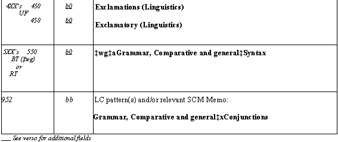

|
SACO
When to Propose a New Heading
Proposal Instructions
What Happens Once a Proposal is
Submitted
Research Tips
Princeton Reference Books
SCM Memos for Common Topics
2007 NjP SACOs (pdf) |
Proposal instructions
Before submitting a proposal make sure that:
- Proposed heading does not duplicate an existing heading, or has not
already been established in another form.
- Proposal is necessary; i.e., it is not covered by a free-floating
subdivision or phrase.
- You have referred to any appropriate memo in the SCM (e.g. H715 for
Ancient cities). You will cite this memo in the 952 field, but it helps
to look it over before you begin. If there is no appropriate memo, look
for an LC pattern to follow (see SCM 202, no. 1). Click
here for list of commonly-used memos.
Filling out the green SACO Workform:
Geographic subdivision
- Circle whether the new heading may subdivide geographically.
- Use relevant patterns as a guide.
- For guidance, refer to SCM H364.
Heading
- Subject headings can be coded 100, 110, 130, 150, or 151 (see Naco
procedure Dividing
up the world or SCM H405).
- In the 1-- box, indicate the correct tag and indicators and formulate
your subject heading according to the appropriate instructions, or analogously
structured headings in LCSH.
670
- First 670 is the work being cataloged. These are like NACO citations,
except they also include main entry. For guidance, refer to SCM H200,
no. 8.
- Other sources in which heading was found. For guidance, refer to SCM
H203.
CITATION GUIDELINES
- Standard reference sources have standard abbreviations, listed
in SCM H203 (e.g. Princeton encyc. classic. sites is the
citation form for The Princeton encyclopedia of classical sites).
- Include volume and page numbers unless (a) the source being cited
is alphabetically arranged and the heading being
proposed, or a reference to it, is found in its normal alphabetical
location in the source.
- It can help to follow LC's choice of sources for certain subject
areas. Look for 670's LC uses repeatedly for certain types of subjects.
- SCM H202 covers authority research for subject heading proposals.
"It is seldom acceptable to cite only the work cataloged as authority
for a new concept, except in the case of certain named entities
such as obscure archaeological sites, brand name products, computer
languages, etc. Although the concept may have been found only in
the work being cataloged, other sources appropriate to the subject
area in question should be cited to demonstrate that the concept
was properly investigated."
- Other SACO Authority Research Tips
from LC
4xxs
- Provide these "used for" references for variants justified in 670
fields, and also references made on the model of those made for the
pattern headings cited in your 952 field. Be sure that proposed 4xxs
do not conflict with any existing heading or references.
- Cite sources in the 670 field for each additional UF reference.
- 4xxs must be listed in alphabetical order.
- In general, do not add UF's to topical headings from their equivalents
in foreign languages, unless they are foreign terms in widespread use
in English-language sources.
- For guidance on form and how references should be constructed, refer
to SCM H373.
5xxs
- Code any relevant 5xxs as BT (‡wg‡a-----) or RT (no coding).
- Be sure they are currently valid headings in LCSH. If they are not
in LCSH, establish them also, filling in a SACO form for each.
- Narrower terms (NTs) will be created automatically by a computer program
at LC.
- For guidance on how to determine an appropriate BT, refer to SCM H370.
- For guidance on how to determine if headings qualify to be RT references,
refer to SCM H370.
675
- Sources searched where heading was not found.
- As in NACO, this field is not repeatable.
- Use the same style of citation as in the 670 (i.e. use standard abbreviations).
952
- List the SCM memo you used, and/or the LC pattern(s) you followed.
- For guidance on when to cite an LC pattern, refer to SCM H202, no.
1.
SAMPLES:

|